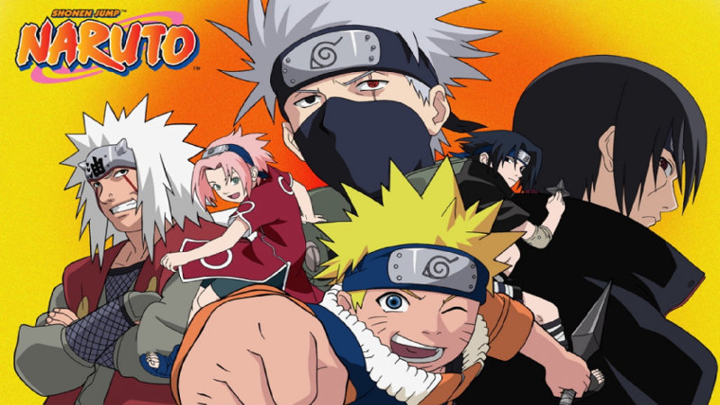
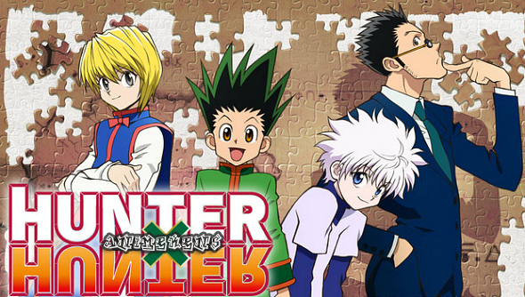
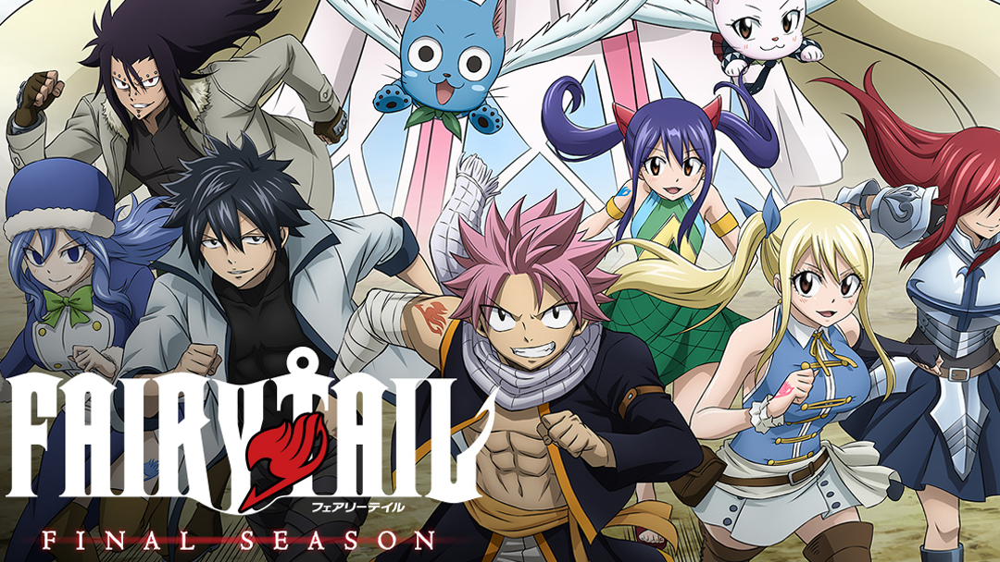

Naruto

Un chico llamado Naruto Uzumaki, quien es huérfano y desea convertirse en Hokage (un líder ninja de la Aldea de la Hoja en donde vive).
Lamentablemente, desde pequeño ha sido odiado y temido por los habitantes de su pueblo debido a que dentro de él ha sido encerrado una de las criaturas más poderosas de todas con el objetivo de salvar a toda la Aldea de la Hoja hace mucho tiempo atrás.
Los portadores de este poder son llamados jinchuriki, y en este caso, Naruto lleva dentro de sí al Zorro de 9 Colas, también conocido como Kyubi, un ser que lo ha atormentado toda su vida, pero que a medida que pasa el tiempo aprenderá a convivir con él y a sacarle provecho en situaciones complicadas durante su carrera ninja.
Tras dar todo su esfuerzo para superar la Academia Ninja, Naruto consigue formar parte del Equipo 7 constituido por Sakura Haruno y Sasuke Uchiha, liderado por Kakashi Hatake. En el transcurso de la trama cumplen misiones, pero surgen una variedad de enemigos que causan problemas a los ninjas de la Aldea de la Hoja.
Tras terminar este anime, la trama sigue con las secuelas Naruto Shippuden donde se muestra la historia de Naruto adolescente casi adulto y Boruto que relata la historia de su hijo. SIn duda, es una serie épica que podés encontrar vía streaming
Ver anime
One Piece

La serie trata sobre Monkey D. Luffy, quien en su niñez obtuvo poderes elásticos al comer una Akuma no mi (Fruta del Diablo ). Inspirado por su amigo, el pirata Shanks, comienza un viaje para lograr su sueño: ser el «Rey de los Piratas». Para lograrlo debe atravesar el Grand Line, un mar peligroso y desconocido donde Gol D. Roger, el difunto rey de los piratas, escondió el One Piece, un tesoro de proporciones inimaginables y que ha sido por décadas la aspiración de los más poderosos y peligrosos piratas del mundo. Sin embargo, ninguno ha logrado obtener, hasta el momento.
Para cumplir con su objetivo, Luffy emprende un viaje por mar donde conocerá a personas excepcionales con las que formará su tripulación y enfrentará un viaje largo y peligroso en el que continuamente son puestos a prueba, enfrentándose a crueles enemigos con habilidades sobrenaturales a los que Mugiwara no Luffy (Luffy Sombrero de paja) tendrá que vencer y así acercarse a su meta de obtener el One Piece y adjudicarse el título de Kaizoku Oni (Rey de los piratas).
Ver anime
Hunter x Hunter

Gon descubre que su padre, Ging, es un Cazador increíble, una persona que se ha demostrado como una persona de primera clase de la humanidad y que tiene experiencia práctica en la búsqueda de animales poco comunes, tesoros misteriosos y diferentes personas.
A pesar de que Ging había dejado a su hijo con sus parientes para buscar sus propias fantasías, Gon termina resuelto a emular el ejemplo de su padre, pasar el exhaustivo Examen de Cazadores y, a la larga, descubrir a su padre como cazador. su propio derecho particular. La primera motivación para el manga se originó a partir del propio interés lateral de la reunión de Togashi.
Ver anime
Fairy Tail

Fairy Tail cuenta la historia de un joven mago llamado Natsu en la búsqueda de su maestro y padre adoptivo Igneel que resulta ser un dragón. Por ello se unió a Fairy Tail, un gremio de magos que es famoso por los destrozos y daños que provocan en diversas ciudades (lo cual no debería ser así). El mundo de Fairy Tail gira alrededor de los magos (los cuales poco tienen que ver con la idea general del mago común) que realizan encargos a cambio de dinero, similar a un cazarecompensas.
Natsu conoce a Lucy, una guapa muchacha cuyo sueño era ingresar a un gremio de magos, específicamente, a Fairy Tail, lo cual consigue gracias a la ayuda de Natsu. De ahí en adelante, la historia sigue los movimientos de esta pareja de magos los cuales se ven envueltos en un sin número de aventuras antes de conseguir la meta final de encontrar a Igneel.
Ver anime